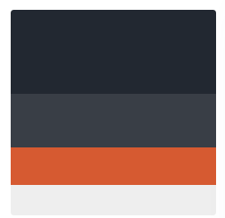

The Website Style Guide
This is just a short blog which I will use to describe the reasons behind the design and colour choices of the site. So first thing you should know is that I love the colour purple, it’s my absolute favourite colour and so I made use of it.
The website layout was just something I drew up after looking at a few example sites and seeing what could be made relatively fast and easily. For more information on that please go look at my wireframe blog posts where I discuss why I made the layout the way it is and my reasons behind it.
I used a website called Color Hunt to look at colour pallets and picked from there, so the colour pallet I liked was the one shown below.
The reason I liked this one was because I thought it was a nice clean and relatively formal set of colours, I like the darker colours as I like them in real life and I figured I could swap the orange for a purple.
Keep in mind though that these are all subject to change as I tweak things to my liking in the style sheet I can easily change the colour scheme of it all and I think I will mess around with that at a later stage. This means that you shouldn’t be alarmed if the colours suddenly change or are different from the above.